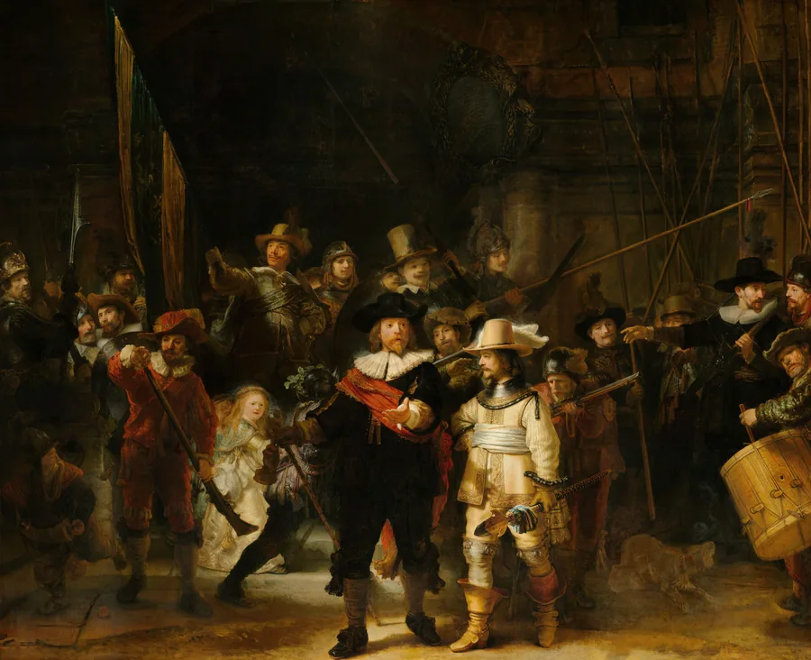

Gece DevriyesiRembrandt van Rijn, 1642Her resim tek bir görüntüden derinlik tahmini yapılarak katmanlara ayrıldı. Bir esere girip fareyi gezdir, telefonu hafifçe eğ ya da kamerayı açıp başını hareket ettir: resim pencere gibi davranır, figürlerin arkası görünür.

Gece DevriyesiRembrandt van Rijn, 1642